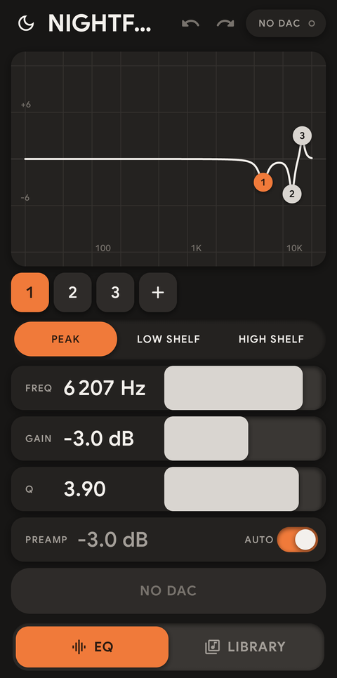
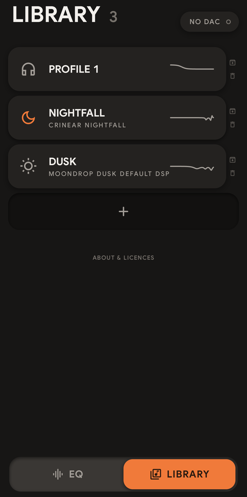
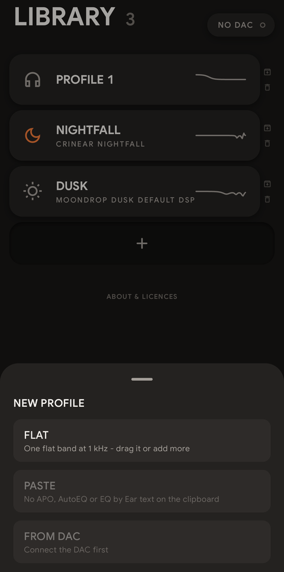

User guide
Contour user guide
Contour keeps your EQ profiles on your phone and writes the one you pick into a CrinEar Protocol Micro. The idea is simple: plug the dongle in, choose a profile, hold the button, unplug. The EQ now lives inside the dongle, so it works with every app and every device you plug the dongle into afterwards, until you send a different one.
This guide walks through everything the app does. If you only want the short version, read The everyday routine and stop there.
Why Contour exists
The EQ lives in the dongle; changing it needed a computer.
Why Contour exists
The EQ lives in the dongle; changing it needed a computer.
The Protocol Micro keeps its parametric EQ inside the dongle, so whatever it holds works with every app and every device you plug it into - no system equaliser, no app running in the background. But the official editor, eq.hangout.audio, is a desktop-browser tool, and phone browsers lack the WebHID it relies on.
Contour puts it on the phone. It does not process audio, does not need the internet and has no accounts. It only talks to the dongle.
What you need
The dongle, an Android phone, nothing else.
What you need
The dongle, an Android phone, nothing else.
- A CrinEar Protocol Micro USB DAC.
- An Android phone with Android 9 or newer and USB host (USB OTG) support. Almost every phone with a USB-C port has it.
- Nothing else: no account, no internet connection, no other app.
Install
Obtainium for updates, or the APK by hand.
Install
Obtainium for updates, or the APK by hand.
The install page has every option step by step. The easiest way to also get updates is Obtainium: in Obtainium tap Add app, paste https://github.com/Chronosauros/contour and install. Or by hand:
- Download. Get the newest
contour-<version>.apkfrom the Releases page. - Open the file on your phone. Android asks you to allow installs from your browser or file manager the first time; allow it for that app.
- Open Contour. The first time it starts with three profiles: PROFILE 1, holding a single flat band to play with, NIGHTFALL, the maintainer's own tuning for the CrinEar Nightfall, and DUSK, the DUSK-Default curve of Moondrop's DSP cable (as published by Crinacle), so the Moondrop x Crinacle DUSK on its analog cable sounds like it does on the DSP cable. Delete any of them whenever you like. Profiles you already have are never touched by an update, so the examples appear only on a fresh install.
If you want to make sure the file is genuine, compare its SHA-256 with the one listed on the release.
The everyday routine
The short version: plug in, pick, hold, unplug.
The everyday routine
The short version: plug in, pick, hold, unplug.
- Plug in. Put the Protocol Micro into the phone. Android may offer to open Contour - say yes, and tick "always" if you want it to open by itself next time.
- Connect. The status in the top right corner changes to CONNECTED with a green dot. If it says TAP TO CONNECT, tap it once and allow USB access.
- Pick. Go to LIBRARY and tap the profile you want. It opens on the EQ page.
- Hold. Hold the big orange HOLD TO SEND button until it fills up (under a second).
- Go. The button turns into ON DAC. Done - unplug the dongle and use it anywhere.
That is the whole point of the app: your EQs are saved on the phone, and moving one into the dongle takes a few seconds.
The two pages
EQ for shaping, LIBRARY for keeping.
The two pages
EQ for shaping, LIBRARY for keeping.
Contour has two pages: EQ, where you shape the current profile, and LIBRARY, where you keep all of them. Switch between them with the bar at the bottom of the screen, or swipe left and right. While your finger is on a slider or a point on the graph, the page stays put.


Status and connecting
What NO DAC, TAP TO CONNECT, CONNECTED and BUSY mean.
Status and connecting
What NO DAC, TAP TO CONNECT, CONNECTED and BUSY mean.
The pill in the top right corner of the Library tells you what the DAC is doing:
| NO DAC | No Protocol Micro is plugged in. Tap it to check again - if the DAC is there, Contour connects. |
| TAP TO CONNECT | The DAC is there, but Android has not given Contour access yet. Tap it and allow. It appears as soon as you plug the DAC in while Contour is open. |
| CONNECTED (green dot) | Ready to send. |
| BUSY | Contour is talking to the DAC right now. Wait a moment. |
On the EQ page the big send button shows the same states (see Sending to the DAC), and tapping NO DAC there also checks the port and connects.
Contour only ever looks for the Protocol Micro. Other USB devices are ignored.
EQ page: editing a profile
The graph, band chips, filter types, sliders, preamp, undo.
EQ page: editing a profile
The graph, band chips, filter types, sliders, preamp, undo.
The top of the page shows the profile's icon and name, with CLEAR EQ on the right: one tap leaves a single flat band with the preamp on AUTO, and the undo arrow brings your curve back. It turns orange while there is something to clear and dims when the EQ is already flat or switched off by A/B. Below are the response graph, the band chips, the filter type and the sliders.
The response graph
The white line is what your EQ does to the sound, from 20 Hz on the left to 20 kHz on the right. Each numbered dot is one band.
- Drag a dot to move a band: left and right changes its frequency, up and down its gain.
- Tap a dot to select it.
- Double-tap a dot to set its gain back to 0 dB.
- Pinch with two fingers to make the selected band narrower or wider (its Q).
- Long-press an empty spot to add a new band right there.
Band chips
The numbered chips under the graph are the same bands.
- Tap a chip to select that band.
- Long-press a chip for BYPASS (switch the band off without deleting it, and back on with ENABLE) or DELETE.
- + adds a band. The Protocol Micro holds up to 8.
A new band starts flat: PEAK, 0 dB, Q 0.71.
Filter type
- PEAK raises or lowers a range around the frequency.
- LOW SHELF raises or lowers everything below the frequency.
- HIGH SHELF raises or lowers everything above the frequency.
FREQ, GAIN and Q sliders
The sliders work relative to where they are, so touching one never makes the value jump.
- Slow drags move the value in fine steps, for small corrections.
- Lifting your finger keeps the value you were holding. A fingertip rolls a little as it leaves the screen, and Contour ignores that last nudge - also when you drag a dot on the graph, pinch for Q or drag PREAMP.
- Fast drags cover the whole range quickly - one fast swipe on FREQ goes all the way from 20 Hz to 20 kHz.
- Tap the number to type an exact value.
Ranges: FREQ 20 Hz to 20 kHz, GAIN -10 to +10 dB, Q 0.1 to 10.
Preamp
Boosting bands can make the signal clip. The preamp lowers the whole volume to make room.
- The bar next to the value switches between MANUAL and AUTO. Tap the side you want.
- With AUTO on (the default), Contour works out the lowest preamp that keeps the curve from clipping and updates it as you edit.
- With MANUAL on, the bar becomes a slider: drag it sideways, or tap the dB value to type a value. The Protocol Micro takes whole dB from -30 to 0.
Everything you change is saved on the phone immediately. There is no save button and nothing to lose if you close the app.
Undo and redo
The arrows beside the profile name step back and forward through your edits. One touch is one step, however far a slider or point travelled, and a drag that ends where it started leaves no step. Each profile keeps its own history of up to 100 steps, and it survives closing the app.
LAST SENT appears beside HOLD TO SEND when the EQ differs from the version saved as LAST SENT: the one last verified on the DAC, or the one you saved from the Library (see Making new profiles). Tap it to bring that version back; the undo arrow can take you back again.
Sending to the DAC
HOLD TO SEND, what the button says, and Quick A/B.
Sending to the DAC
HOLD TO SEND, what the button says, and Quick A/B.
HOLD TO SEND is the only button that writes to the dongle. Hold it for about 0.7 seconds: it fills from left to right. A tap alone does nothing, so you cannot send by accident.
What happens next:
- Write. Contour writes every band and the preamp to the DAC.
- Read back. It reads everything back and compares it with what it sent.
- Store. Only if all of it matches does it tell the DAC to keep the EQ in its memory.
The button then shows what happened:
| HOLD TO SEND | Ready. The current profile is not on the DAC yet, or you changed it since. |
| SENDING | Writing and checking. Keep the DAC plugged in. |
| ON DAC | This exact profile is on the DAC and saved in its memory. |
| FAILED - HOLD TO RETRY | Something did not match or the DAC was unplugged. Hold again. |
| NO DAC / TAP TO CONNECT | Plug the DAC in, or tap to check and allow access. |
The Library marks the profile last sent with ON DAC, so you always know what the dongle holds.
Quick A/B
While the profile is ON DAC, an A/B button sits in the top right corner of the graph. Tap it to hear the music without the EQ: the orange button turns grey and reads EQ OFF - PREAMP KEPT, so the volume stays the same and only the curve is switched off. Tap again to bring the EQ back.
A/B changes only what the DAC plays right now. It never saves anything to the DAC's memory, so if you unplug the dongle it goes back to the EQ you last sent. Sending, changing profile or leaving the EQ page brings the EQ back first.
Library page: your profiles
Tap, long-press and swipe a profile card.
Library page: your profiles
Tap, long-press and swipe a profile card.
Every profile is a card with its icon, name, a short description and a small picture of its curve.
- Tap a card to make it the current profile and open it on the EQ page.
- Long-press a card to edit it: change the NAME and description, pick an ICON, DUPLICATE it (handy before experimenting) or SHARE it. CLEAR EQ leaves one flat band with the preamp on AUTO, and the undo arrow on the EQ page brings the curve back.
- Swipe left on a card to ARCHIVE or DELETE it. Both show UNDO for 5 seconds. Archived profiles move to a folded section at the bottom of the list. Open it and swipe an archived card to RESTORE it.
A good habit: one profile per pair of earphones or headphones, named after them.
Making new profiles
FLAT, PASTE, FROM DAC - and saving all as LAST SENT.
Making new profiles
FLAT, PASTE, FROM DAC - and saving all as LAST SENT.
Tap the empty card with + at the end of the Library.
Swipe that card left for LAST SENT: after a confirmation it saves every profile, archived ones too, as its LAST SENT version, without sending anything to the DAC. It replaces the previous LAST SENT versions and cannot be undone.

- FLAT - one flat band at 1 kHz. Drag it or add more.
- PASTE - takes an EQ from the clipboard. Copy a parametric EQ first, for example from AutoEQ (the "Equalizer APO" / parametric text), a Squiglink graph tool, or an EQ by Ear JSON export, then tap PASTE. If the clipboard holds nothing Contour understands, the option is greyed out.
- FROM DAC - reads the EQ that is on the dongle right now and saves it as a profile. Useful the first time, to keep whatever was on it before.
Pasted EQs with more than 8 bands, or values outside the Protocol Micro's ranges, are trimmed to fit; the PASTE line tells you when that happened. Check the curve before sending.
Sharing and backing up
SHARE sends a profile as plain text you can paste back.
Sharing and backing up
SHARE sends a profile as plain text you can paste back.
SHARE (long-press a profile) sends it as plain text in the Equalizer APO parametric format - the same format PASTE reads. Send it to yourself in a messaging app or notes app, and you have a backup you can paste back into Contour on any phone, or load into Equalizer APO and other EQ tools on a computer.
Profiles live only on your phone. Uninstalling Contour deletes them, so share the ones you care about first.
About and licences
Version, copyright and open-source licences, inside the app.
About and licences
Version, copyright and open-source licences, inside the app.
ABOUT & LICENCES at the very bottom of the Library shows the app version, the copyright, and the open-source licences of Contour and everything it uses (also reachable from the service screen).
Service screen
Raw DAC state, the USB log, read and restore.
Service screen
Raw DAC state, the USB log, read and restore.
Long-press the status pill (top right of the Library) to open the service screen. You will rarely need it:
- the raw state the DAC reports, band by band;
- a log of the USB conversation, useful for bug reports;
- Read from DAC, and Restore flat, which writes a flat EQ to the DAC (asks for confirmation first);
- Licences: the open-source licences of Contour and everything it uses.
How the Protocol Micro limits work
8 bands, three filter types, and the HIGH SHELF detail.
How the Protocol Micro limits work
8 bands, three filter types, and the HIGH SHELF detail.
The dongle has 8 bands, the three filter types, gain from -10 to +10 dB, Q from 0.1 to 10, frequencies from 20 Hz to 20 kHz, and a preamp in whole dB from -30 to 0. Contour never lets you set anything outside those limits, so what you see is what the dongle plays.
One detail: the Protocol Micro has no real high-shelf filter. Contour sends a HIGH SHELF as a mirrored LOW SHELF plus preamp, which gives exactly the same curve. You do not need to do anything about it; the graph and the sound match.
Other DACs
Only the Protocol Micro today.
Other DACs
Only the Protocol Micro today.
Other dongles built on WalkPlay, KT Micro and FiiO chips are possible later. Each one is enabled only after someone confirms it on real hardware. Have one and want to help test? Say so in GitHub Issues.
Troubleshooting
NO DAC, TAP TO CONNECT, FAILED, PASTE greyed out, quieter sound.
Troubleshooting
NO DAC, TAP TO CONNECT, FAILED, PASTE greyed out, quieter sound.
The status stays on NO DAC. Unplug and plug the dongle again. Try without adapters or hubs. Check that USB OTG is on, if your phone has a setting for it.
TAP TO CONNECT comes back every time. Android asks for USB access per session. When Android offers to open Contour after plugging in, tick "always" - then it opens straight away with access granted.
FAILED - HOLD TO RETRY. Usually the dongle was unplugged or moved during sending. Hold the button again. If it keeps failing, open the service screen and share the USB log in a GitHub issue.
PASTE is greyed out. The clipboard does not hold a parametric EQ Contour understands. Copy the text again - the part with lines like Filter 1: ON PK Fc 105 Hz Gain 3.0 dB Q 0.71.
The sound is quieter after sending. That is the preamp making room for boosted bands. It keeps the sound clean. Turn the volume up a little, or reduce the boosts.
Does the EQ stay on the dongle? Yes. After ON DAC it is stored in the dongle's memory and stays there when you unplug it, until you send something else.